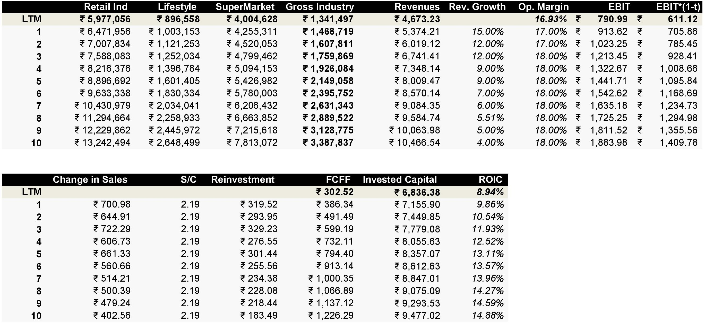

Trent Ltd - DCF Valuation and Equity Research
Come on! Valuations don't make sense, isn't it? They can get absolutely wrong!
My favorite penny stock 'Robinhood' seemed like a bargain (at $40) before it went penny. With a drop of tear running down my cheeks, here I present to you an Intrinsic Valuation and Equity Research of Trent Ltd.
Short Intro - Trent Ltd:
Trent Ltd is involved in lifestyle retail business of apparels, footwear and accessories. India’s apparel market is estimated at ₹59,300 crores in 2022 and the Indian fashion industry is the sixth largest market in the world.
Trent Ltd's flagship products are Westside and Zudio, which offers branded fashion apparel, footwear and accessories for women, men and children at competitive prices. They have some alliances like Zara, Massima Dutti, Utsa and Landmark.
They are also involved into Food & grocery retail business, running Star Market in 50-50 Joint Venture. India's online grocery market is expected to grow from 10% to 30% market share by 2025. They have 51% stake in Booker Wholesale, which serve kirana stores, hotels and restaurants with products in categories across staples, processed foods, confectionery, personal care, home care, soft drinks and dairy
My Narrative - Business Story
Trent Ltd Products: Major Products include lifestyle retail stores like WestSide (flagship product), Zudio, Zara (which creates 34.91% of Trent's total value), Massimo Dutti and food/grocery retail business like Star Market and Booker India Ltd.
Markets that Trent Ltd can grow in: Trent Ltd already has a big presence in lifestyle retail industry with WestSide and Zara. They can expand their food and grocery business (Star Market) which is loss making right now.
Competitive Advantages (Brand Name): Trent Ltd already has a big brand association mainly from Zara and WestSide. But, I believe it's not a 'sustainable' competitve advantage especially for a lifestyle retail business which associates themselves with attractively priced lifestyle products. This would mean that there would be a potential price war between similar staged brands.
Potential Opportunity for Trent Ltd: Trent Ltd focuses heavily on being efficient in operations. This has refected in their 'Sales per square feet' which is maintained at ₹10,500 even after expanding more retail stores across India and shrinkage at 0.14%. Another big potential opportunity for Trent Ltd is WestSide Club Members which contribute to over 85% in sales. If they can create a strong networking effect in their member base, they can build a strong competitive advantage.
Nature of Product/Service: Lifestyle Products are somewhat discretionary in nature. During recessions, the industry will hit slightly.
The Customers: The Target Audience is Urban Middle Class Households. Lifestyle Products are tilted towards women's fashion.
The Customers Pain Points: Women like variety in their fashion closet especially for their Instagram Feed. They want clothes which only look expensive but can be bought at an attractive price i.e. On Sale.
Pricing: An Average Bill Size from WestSide Club members is around ₹2,800.
Revenues to Profits: Trent Ltd biggest expenditure are their employee benefit expenses (people handling the rides, sweepers, security guards etc), cost for leasing assets, advertising and marketing expense, freight charges. They make about 15.58% Operating Profit Margin.
Competition: Competition comes from Metro Brands, V-Mart, Shoppers Stop, Future Lifstyle Fashions and V2 Retail. Some purely occasion fashion brands like Manyavar on a lesser extent.
How Much Capital Intensive?: Retail Business usually requires high capital expenditure like huge Leasing and Aquisition Cost. Trent Ltd has been efficient enough in their operations and making ₹2.19 of Sales for every Rs.1 of Invested Capital. If they follow this trend in the future, they would need to invest about ₹264 cr per annum on average for the next 10 years to increase their Return on Capital to 14.88%. Trent Ltd has reinvested 50% of their earnings in FY22 but as the company matures, it can reduce it's reinvestment rate to about 13% while maintaining a high Return on Capital.
Strengths and Weakness: Trent Ltd has a big brand name association with Zara and WestSide. They have good operational efficiency which is a lifeline for of a retail business. One of their weakness is Interest Coverage Ratio which is 2.04 in FY22 while another weakness is their Return on Capital (8.94%) is lower than Cost of Capital (11.08%) as of FY22.
India's Risk Free Rate
After getting familiar with Trent Ltd's Business Model and Key Story Points, I start my DCF valuation off by finding out the Risk Free Rate(Rf). As my nominal cash flows are going to be estimated in INR. My discount rate or cost of capital is going to match INR too.
My basis to find the risk free rate of India is to take 10 Year Government Bond Rate and substract the Default Spread. Fitch's Credit Rating for India as on June 10, 2022 was Baa3. The default spread at Baa3 is approximately 1.87%. India's 10 Year Government Bond Yield was 7.6% when I did my valuation.
Risk Free Rate for India comes out to be 5.72%
Equity Risk Premium
Note: The calculations are based on Nifty50 and Nifty50 Dividend Points Index. Buybacks are not considered into the calculation of Equity Risk Premium.
To find out Equity Risk Premium, I used Dividend Discount Model on Nifty50 Index to find out what an investor would earn from the benchmark. I projected out 5 years of expected dividends based on growth rate and dividends of the index in last 10 years. Expected Growth Rate of 12.05% and Dividend CashFlows of ₹138.95.
These numbers might be low for some people because the actual dividends from Nifty50 in 2021 was ₹189.17. I do understand that but I believe normalization of numbers was neccessary as 2021 was one of the best bull runs in history. The danger of overestimating the market for the next 5 years might be too much in my valuation.
Expected Return on Nifty50 Index comes out to be 9.37% and after substracting Risk Free Rate (Rf), we get Equity Risk Premium of 3.65%. Trent Ltd has all the revenues and value coming from India, so it was easier to calculate ERP of Trent Ltd and get done. I would have taken a weighted average ERP based on where the revenues coming from.
Beta - Relative Risk
My Relative Risk Measure starts with taking an industry average regression beta. In case of Trent Ltd, there are two industries Supermarkets Retail and Fashion Retail. I took industry average regression beta for both industries and unlevered it with industry average debt to equity ratio. The Final step is to Lever the beta with Trent Ltd's Debt to Equity Ratio and Marginal Tax Rate.
The Regression Beta is calculated based on monthly returns on 5 years time period. I used Python SciPy Module for the task.
In order to convert revenue weights into value weights, I used EV to Sales ratio. Some people might think that the process is long to get a small number but trust me, it's worth it! I personally got to know more about the retail industry by calculating the beta, and it helped me to make reasonable estimations in cash flows too.
The Levered Beta, that I come up with is 1.63
Cost of Equity and Pre Tax Cost of Debt
We have all the ingredients to find out Cost of Equity. Cost of Equity is the Risk Free Rate added Beta times the Equity Risk Premium. We get Cost of Equity of 11.67%. High cost of equity is connected to high beta, which is further connected to the Debt to Equity Ratio Trent Ltd. It's all connected!
Let's unpack the pre tax cost of debt component. Cost of Debt is equal to Risk Free Rate added the India's Default Spread multiplied by Lambda (Volatility in Nifty50 Index divided by Volatility in 10 Year Indian Government Bond) added the Company's Risk Premium.

I used python to come up with the Volatility (Standard Deviation) of Nifty50 Index and 10 year indian government bond. Lambda comes up to be 1.61.Final component in the calculation is the Company's Risk Premium. I used a Synthetic credit rating of Trent Ltd to come up with that number.
The Average Interest Coverage Ratio of Trent Ltd for the last 5 years is 3.2 (Ba2 Credit Rating). The Company's Risk Premium comes out to be 2.15%. With everything in place, here is the cost of equity and pre tax cost of debt.
WACC Calculation
From cost of equity and pre tax cost of debt, we can calculate WACC. There is one last step. We need market value of debt and equity. Market value is the market capitalization of Trent Ltd. Market value of Debt is the book value of debt converted into market value by taking interest expense, pre tax cost of debt and average maturity of debt.
Total Debt includes Non Convertible Debentures, Financial Lease (long and short term) and Operating Lease. Book Value of Debt is ₹5,085.08 cr Market Value of Debt comes out to be ₹4,606.14 cr with an assumption of average maturity of debt is 5 years.

Market Value of Debt being lower than Book Value of Debt means the market is putting a high interest cost on trent ltd or in other words they want a high risk premium against Trent Ltd's debt. Debt is about 11% and Equity is rest 89%. We use the marginal tax rate to deal with pre tax cost of debt. Finally, we get a discount rate for Trent Ltd. WACC comes out to be 11.08%.
Dealing with Operating Lease
The next step of out journey to correct some mistakes that accountants make while calculating earnings. The first roadblock is about dealing with operating lease. Although Trent Ltd has shifted majority of lease agreements under Financial Lease in Balance Sheet. There is a portion which they believe should be considered as Operating Lease. Yes, I know that the company has cancellable lease agreements under operating lease. But, I am being sure that I don't get tricked by some accounting magic happening under the carpet.
I am going to treat every lease agreement as debt and write off only the expected depreciation on leased asset using Straight Line Method (SLM). This would push EBIT from ₹410.09 cr to ₹728.04 cr.
Capitalizing Advertising Expenses
If we look at a advertising expense with purest sense, nobody does advertising just to reap reward the only year the expense was incurred. Advertising contributes to Brand Name which is beneficial for the company in the future, especially for discretionary products and services. It should be treated like an asset, not an expense.
In order to capitalize advertising expenses, we take the last 5 years advertising expenses and assume that amortized life is 5 years. We estimate the value of advertising asset by multiplying the actual ad expenses with weights. The Amortization we write off, is an addition of 1/5th of every ad expense of last 5 years.
We add back the advertising expense to EBIT and deduct the amortization of advertising asset. This would further push the EBIT from ₹728.04 cr to ₹790.99 cr. So far so rosy! EBIT after tax comes out to be ₹611.12 cr.
Net Capital Expenditures
Net Capital Expenditures is capital expenditures minus D&A. I treated acquisition cost of ₹66.27 cr and Advertising expense of ₹113.11 cr as capital expenditure too. And I don't forget to subtract the extra amortization on advertising asset of ₹50.16 cr. Net Capital Expenditures comes out to be ₹88.59 cr.
Change in Non Cash Working Capital
We start with normalizing working capital as a % of revenues by taking the last 5 years. The average working capital as a % of revenues comes out to be 11.55%. I could have taken Industry Average of 13.7%, but it seems like noisy estimates. Adjusted Change in Non Cash Working Capital is ₹220.01 cr.
Free Cash Flow to Firm (FCFF)
After cleaning up the numbers, we can arrive at Free Cash Flow for Firm (FCFF). We already have an adjusted EBIT of ₹611.12 cr (adjusting operating lease and advertising expense). We deduct total reinvestment of ₹308.60 cr (Net Capital Expenditures plus Change in Non Cash Working Capital) to arrive at Free Cash Flow to Firm of ₹302.52 cr.
Now we have got the present numbers sorted out, we can put our attention to future numbers aka Future Free Cash Flows and Growth Rates.
Future Cash Flows (10 Years)
So, here we come to the meat and bones of intrinsic valuation, the future cash flows. My story about the Trent Ltd valuation is that they will improve their return on capital on existing assets from 8.23% to 14.88% (which is close to industry average) and get a similar return by investing in new growth projects. I always reminded myself to be 'reasonable' while estimating the future cash flows. There is a high chance, that I might be wrong. It's a forecast afterall!
I started looking at the industry growth and size. As per Kearney Research, India’s retail industry is projected to grow at a slower pace of 9% over 2019-2030, from ₹75,210 crores in 2022 to ₹1,40,700 crores by 2026 and more than ₹1,80,000 crores by 2030. That's the whole retail industry numbers but we want only the lifestyle retail industry and food/grocery retail industry.
The Assumptions:
1. The Gross Industry is calculated based on the revenue weights today, which means 86% market of Lifestyle Retail and 14% market of Food/Grocery Retail. If Trent Ltd do crack into the Food/Grocery Business in the future, their gross industry and revenues should increase beyond my estimate. At this moment, I don't believe that their Food/Grocercy Business would be outcompete the Lifestyle Business.
2. Lifestyle Retail Business is only 15% of the total retail industry. By the end of 10 years, I believe that the lifestyle business would increase to 20% of total retail industry. Why? Fast Fashion is already a thing, it can go upwards from here.
3. Online retail market in India will rapidly increase. Trent Ltd WestClub members will become their biggest asset in the future. Even online penetration of retail is expected to reach 10.7% by 2024 versus 4.7% in 2019.
4. By 2030, Trent Ltd will take 25% of the market share of their gross industry.
After gauging the industry numbers, the next question is the future revenues. It's reasonable to think that their revenues would be ₹10,466 crores by year 10. The revenue growth goes from 15% to 4%. The Operating Margin will increase upto the industry average of 18%.
The final question is the reinvestment. How much Trent Ltd has to reinvest in their business to get the above revenue growth and operating margin? That depends on operational efficiency! To guage that number, I used a ratio called Sales to Invested Capital Ratio. Sales to Capital Ratio is a simple measure to know how much revenues a company generates on their current invested capital.
Based on last 5 years, Trent Ltd has an average Sales to Capital Ratio of 2.19. So, the reinvestment will be change in sales divided by 2.19 every year for the next 10 years. At the end, I projected Trent Ltd Return on Invested Capital to go from 8.94% to 14.88% at year 10.

Terminal Value
So, we have next 10 years of future cash flows. Now, the question is what happens after 10 years. Let's get some logical things out of the way:
1. Trent Ltd will become a mature company, which means a mature cost of capital. They ain't be paying 11.08% to raise additional capital.
2. They cannot outgrow the economy, which means Trent Ltd cannot grow 10%-15% till perpetuity. They will grow less than the economy of India.
3. The reinvestment will be bare minimum (just repairs and maintainence of existing assets) and return on capital will be maintained.
With these assumptions, we calculate Mature Company Cost of Capital. Risk Free Rate and Equity Risk Premium remains the same but the beta shifts to 0.92 (industry average). In the Pre Tax Cost of Debt Calculation, we assume that they company's risk premium will decrease to 0.67%. (AAA Rating). The Mature WACC comes out to be 8.63%, which means that Trent Ltd will reduce their cost of capital from 11.08% to 8.63%.
The Growth Rate in perpetuity is 4%. Why? Economy's growth rate is a combination of mature companies and young growth companies. It's a good assumption to grow an economy on it's risk free rate (5.72%). My assumption dictates that 4% of that growth comes from mature companies and rest 1.72% comes from young growth companies.
With all numbers in my palm, I calculate the Terminal Value, which comes out to be ₹23,141.24 cr.
Cash and Marketable Securities
Cash is always left out of the conversation while valuing cash flows because it's already earning it's fair return. Same goes for marketable securities (closed ended and open ended mutual funds). The question to ask is, should a company be compensated or punished based on the fact how they use their cash?
We should think about cash and marketable securities (near cash) as a mechanism to enter future projects. If a company has a history of earning lower return on capital than cost of capital, there should be discount on the cash they have right now and vica versa.
In case of Trent Ltd, they have a return of capital of 8.94% and cost of capital of 11.08%. There should be a 2.14% discount on their cash and marketable securities as a punishment. Honestly speaking, Trent Ltd does't have big cash balance which would affect valuation. This works best for companies which have huge cash balances.
Value of Cross Holdings
This is a mess! But it's worth it. I found out that Zara (Inditex Retail Ltd) contributes to almost 35% of the total Trent Ltd value. Cross Holdings reaps big rewards, so leaving it out of the table might be undervaluing the firm.So, we have to do intrisic valuation of every cross holding one by one. Just the thought makes me numb. But I did it anyway!
Trent Hypermarket Pvt Ltd (open image in new tab to view clearly):
Value of Equity of ₹648.26 cr.
Massimo Dutti India Pvt Ltd (open image in new tab to view clearly):
Value of Equity of ₹331.60 cr.
Inditex Trent Retail India Pvt Ltd (open image in new tab to view clearly):
Value of Equity of ₹18,461.16 cr.
So, we have value of equity of all the cross holdings except one (Booker India Pvt Ltd and it's three cross holdings). We don't have enough data so I am going to attach EV/EBITDA multiple of 10.1 (industry average) with the value of investments in Booker India Ltd.
Trent Hypermarket is already consolidated, so we subtract the non ownership (50%). Below is the value of cross holdings:
Fair Value of Share
The moment of truth is here! Let piece together everything we have and tie a bow to it. The Present Value of future cash flows comes out to be ₹4,804.34 cr and Present Value of Terminal Value is ₹10,111.24 cr. We get the Value of Operating Assets of ₹14,915.58 cr. We feed in Cash, Marketable Securities and Value of Cross Holdings. Trent Ltd has ₹141.7 cr of contingent liabilities off the books, which is going to part of Value of Debt. Trent Ltd doesn't give any stock based compensation (no restricted stock or stock options).
The Value of Common Stock is divided by number of shares outstanding to get a fair value of share, which is ₹605.78 per share. Trent Ltd's Stock is trading at ₹1,049.10 per share on June 27, 2022.